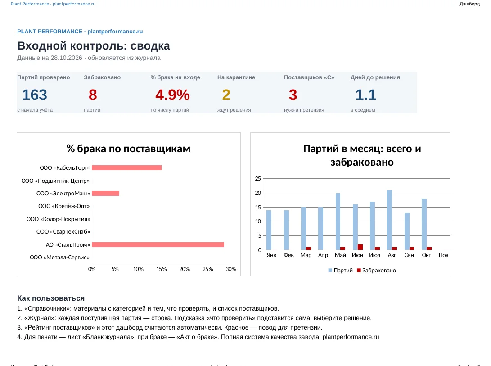

Plant Performance / Образцы / Журнал входного контроля материалов
Бесплатный образец
Журнал входного контроля материаловобразец в Excel для производства и завода — скачать бесплатно
Журнал, который не только хранит записи, но и показывает, какой поставщик возит брак. Выберите материал — Excel подскажет, что проверить. Выберите решение — пересчитаются рейтинг поставщиков и дашборд.
Excel без макросов + PDF: бланк журнала для печати и акт о несоответствии. Без регистрации. Открывается в Excel и LibreOffice.

Что внутри
- Журнал по ГОСТ 24297-2013 «Верификация закупленной продукции»: партия, документ о качестве, проверка, решение, срок карантина
- Справочник материалов с категорией A, B, C и тем, что проверять для каждой
- Рейтинг поставщиков — процент брака и класс A, B, C с рекомендацией: сохранить, наблюдать или выставить претензию
- Дашборд — брак на входе, партии на карантине, динамика по месяцам
- Бланк журнала на А4 и акт о несоответствии для претензии поставщику
Как заполнять журнал входного контроля
- Одна строка — одна партия.
- Укажите дату поступления, материал, поставщика, номер документа о качестве и партии.
- Запишите результат проверки и решение: принято, карантин или забраковано.
- Если забраковано — оформите акт о несоответствии и укажите его номер в журнале.
Журнал входного контроля материалов: частые вопросы
Кто ведёт журнал входного контроля?
Контролёр ОТК или лаборант; на небольшом заводе — кладовщик вместе с технологом.
Сколько хранить журнал?
Срок хранения устанавливает предприятие в своих документах; обычно не меньше срока службы или гарантийного срока продукции.
Нужен ли журнал, если есть 1С?
Да, если в 1С нет решения по качеству партии и статуса «карантин».
Входной контроль — часть системы качества завода
В полной системе документов: процедура контроля продукции, инструкции входного контроля по материалам, одобрение поставщиков, рекламации и 8D.
Другие бесплатные образцы
Напишите нам
Расскажите в двух строках, что за завод и что хотите посмотреть или автоматизировать. Ответим, покажем программу в работе и пришлём документы, которых нет на сайте.